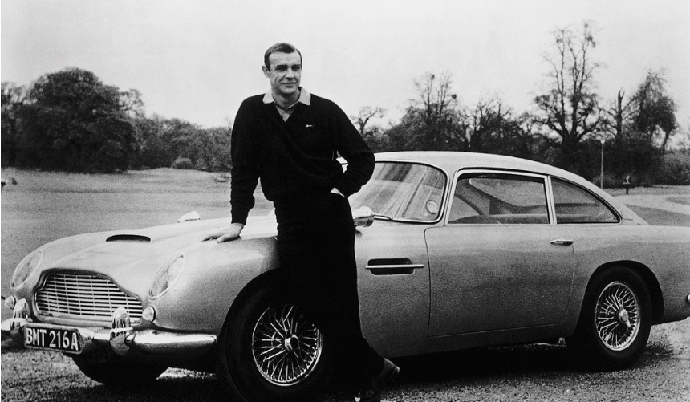
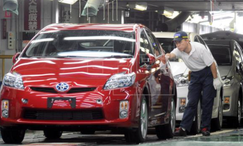

El 21 de noviembre de 1970 un joven de tan solo 20 años de edad llamado Sebastian Bautista el cual tenía dos pasiones muy grandes, la mitología griega y los autos, y decide emprender un proyecto un tanto arriesgado y se plantea las siguientes preguntas, ¿Puedo convinar mis dos pasiones? ¿Que pasa si no funcioana como espero? ¿Valdrá la pena? ¿Podré hacer que las personas gusten de mi proyecto?, a raíz de estas preguntas decidió renunciar a su trabajo actual en aque entonces, el se dedicaba al diseño con el dinero que recibió creó su primer prototipo al cual llamó Zeus. Es así como decide presentar su prototipo a un grupo de inversionistas al principio no le dan la importancia ya que lo ven demasiado joven, el no se da por vencido y cuando expone su proyectos los inversionistas quedan fasinados ante el talento y el conocimiento del joven es así como da inicio Zeus´s Car la empresa es llamada así ya que es uno de los Dioses más poderosos en la mitología griega. Desde entoces cada vehículo es diseñado y lleva el nombre de algún Dios o criatura mitológica que encaja muy bien con las funciones, diseño y capasidad del vehículo. Y hoy en día es una de las empresa más destacadas a nivel mundial. Lamentablemente nuestro fundador muere en 2015 pero deja su legado a su familia y pide que se mantenga la calidad de los vehículos para que sus clientes siempre tengan lo mejor
Ofrecer a nuestros clientes vehículos, repuestos y servicio de la más alta calidad y prestigio mundial, buscando satisfacer expectativas y necesidades, por medio de nuestros colaboradores altamente calificados. Sin dejar de lado el significado que cada automóvil representa
Superar nuestro liderazgo en la venta de vehículos, repuestos y servicios, alcanzando ser el ejemplo en Guatemala y a nivel mundial en brindar un servicio de excelencia en Todas nuestras empresas
1. Mantener el Legado de nuestro querido Fundador adaptándolo a cada generación
2. Brindar la mejor calidad y durabilidad
3. Reistencia y estética
Brindar más que un automóvil sino que sea indicado para cualquier experiencia desde un viaje familiar por carretara hasta un viaje a montañas y cualquier otro terreno. Nuestra prioridad siempre serán nuestros clientes y su comodidad.